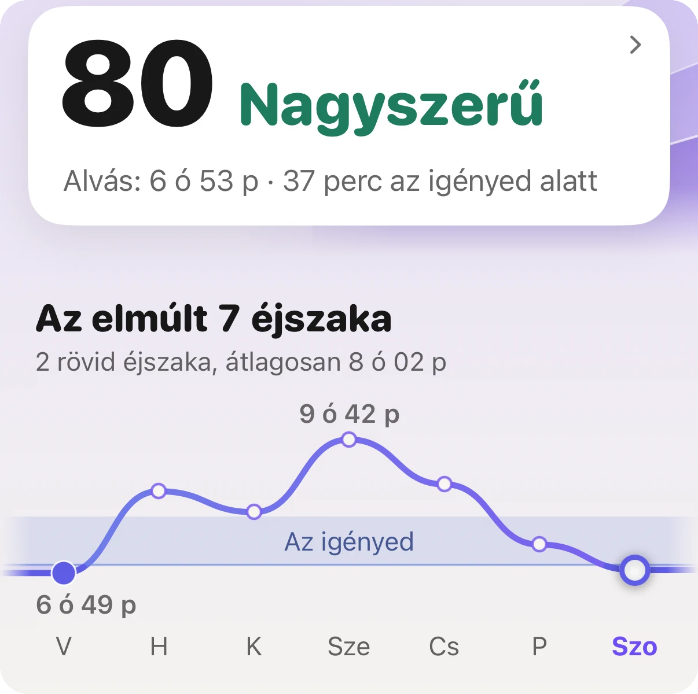
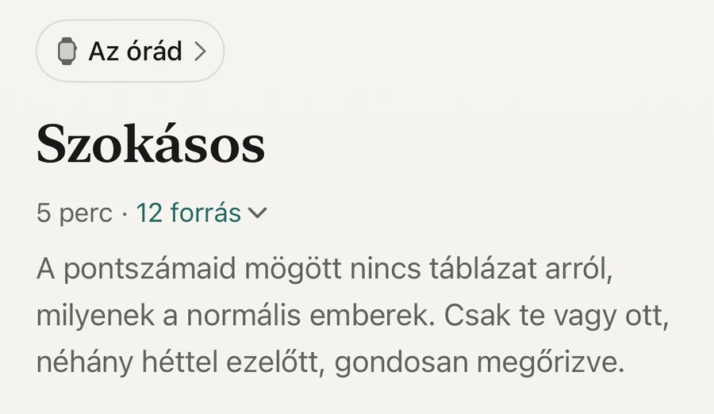

Alapok · Alvás

Az első változás az első éjszakán látszik: alacsonyabb a pulzusod alvás közben, és magasabb a HRV-d. Az alkohol éjszakai hatása ahhoz az éjszakához tartozik, amikor ittál, ezért az itallal együtt el is tűnik. A lassabb dolgokhoz kell a hónap. Egy vizsgálatban, ahol a résztvevők egy hónapra abbahagyták az ivást, a vérnyomásuk és a testsúlyuk is csökkent. Az óra az első fajta változást tudja megmutatni. A májadat nem látja.
Éberebb állapotban tartja a szervezetedet, miközben alszol. Egy finn vizsgálatban 4098 dolgozó felnőtt viselt pulzusmérőt alkoholos és alkoholmentes éjszakákon, és mindenkit a saját alkoholmentes éjszakáihoz hasonlítottak. Alkohol után az alvás első óráiban magasabb volt a pulzus, és alacsonyabb a szívritmus-változékonyság, a HRV. Az alvás első három órájából a szervezet kevesebb időt töltött regenerálódó állapotban: kevés alkohol után 9, közepes mennyiség után 24, sok után 39 százalékponttal kevesebbet (Pietilä és munkatársai, 2018).
Mennyi veszett el az éjszaka elejének regenerálódásából
Ettől sem az edzettség, sem a fiatal kor nem védett meg. A hatás mindkét nemnél és minden aktivitási szinten megjelent.
A másnapra is jut belőle. Egy 32 vizsgálatot összesítő Cochrane-áttekintés szerint a nagyobb mennyiségű alkohol akár 24 órán át megemelve tartja a pulzust (Tasnim és munkatársai, 2020). Ezért lehet másnap magasabb a nyugalmi pulzusod.
Mert az alkohol egy éjszaka alatt két ellentétes dolgot csinál. Az alváslaborban végzett vizsgálatok áttekintése szerint lerövidíti az elalvás idejét és mélyíti az éjszaka első felét, a második felét viszont megzavarja. Közepes és nagy mennyiségben a REM-alvást is késlelteti és csökkenti (Ebrahim és munkatársai, 2013).
Az órán a második fél az, amit látsz: hajnal felé több az ébren töltött idő, és a pulzus fent marad. Az egyes alvásszakaszok perceibe ne olvass bele túl sokat. Az óra a mozgásból és a pulzusból becsüli a szakaszokat, és ez a becslés durvább, mint amilyennek az ábrán látszik.
Az éjszakai számok, és azonnal. A hatás ahhoz az éjszakához tartozik, amikor ittál, ezért az alkohol nélküli éjszaka olyan, amilyenek az alkoholmentes éjszakáid mindig is voltak: alacsonyabb alvási pulzus, magasabb HRV és nyugodtabb második fél.
Hogy mennyit látsz ebből, az attól függ, honnan indulsz. Ha a legtöbb este ittál valamit, az órád ezekből az éjszakákból tanulta meg, mi a megszokott nálad. Az első héten a számaid jobbak lesznek a megszokottnál, a következő két-négy hétben pedig a megszokott érték felzárkózik hozzájuk. Ha ritkán ittál, alig lesz mit látni, és ez is valódi eredmény.
Az óra az éjszakát meg tudja mutatni. A májadat nem.
Egy dolgot tarts észben. Egy megfázás, egy kemény edzés, egy késői nehéz vacsora, a meleg hálószoba vagy egy feszült hét ugyanezeket a számokat mozgatja. Egy jó éjszaka semmit sem bizonyít. Egy jó hét már kezd jelenteni valamit.
A lassabb dolgok. Egy londoni vizsgálatban 94, közepesen vagy sokat ivó ember egy hónapra abbahagyta az ivást, 47 másik pedig folytatta. Akik abbahagyták, azoknál a szisztolés és a diasztolés vérnyomás is nagyjából 6%-kal csökkent, a testsúly 1,5%-kal, az inzulinrezisztencia egyik mutatója pedig mintegy negyedével. Akik tovább ittak, azoknál semmi sem változott. A vizsgálat nem volt randomizált, tehát azt mutatja meg, mi történt, az okot nem bizonyítja (Mehta és munkatársai, 2018).
Itt is számít, mennyit ittál. A vizsgálatok összesítése szerint a kevesebb ivás azoknál csökkentette a vérnyomást, akik naponta két italnál többet ittak, és minél többet hagytak el, annál jobban csökkent. Akik ennél kevesebbet ittak, azoknál alig változott (Roerecke és munkatársai, 2017).
Azt nehezebb mérni, hogy ki hogyan érzi magát. A Sussexi Egyetem felmérésében a Dry Januaryt, az angol száraz januárt végigcsinálók közül tízből nagyjából heten mondták, hogy jobban alszanak. Ők maguk döntöttek a részvételről, és maguk számoltak be róla, ezért ezt tapasztalatként olvasd, ne mérésként (University of Sussex, 2019; de Visser és Piper, 2020).
Ha minden nap sokat iszol, ne hagyd abba egyik napról a másikra egyedül. Az elvonás veszélyes lehet, ezért előbb beszélj egy orvossal.

A te megszokott értéked, nem egy átlagemberéAz Aera minden pontszámot a saját elmúlt heteidhez mér. Ettől lesz látható egy hónap változása, és ezért mutatnak a megszokottnál jobbat egy új szokás első hetei.
Az Aera, iPhone-ra és Apple Watch-ra
Az Aera az alvásodat, az alvási pulzusodat, a HRV-det és a nyugalmi pulzusodat a saját megszokott értékeidhez méri, ahhoz a sávhoz, amelyet az elmúlt heteid jelölnek ki. Ha egy éjszaka ezen kívül esik, a képernyő ezt egyszerű szavakkal megmondja. Amíg kevés az adat, azt írja, hogy még tanul.
Az Aerában nincs italszámláló, és nem tudja, ittál-e. Azt mutatja meg, mit csinált a tested. A jegyzetei elmagyarázzák, mi mozgatja az egyes számokat, az alkoholt is beleértve, és megnevezik a mögötte álló vizsgálatot. Ha vérnyomást is mérsz, egy mérést megjelölhetsz azzal, hogy Alkohol tegnap este.
Minden pontszám elmúlt 30 napja ingyenes, ami éppen egy száraz hónap az első éjszakától az utolsóig. Nincs fiók.
Az Aera nem orvostechnikai eszköz. Azt nem tudja megmondani, hogy neked mennyi alkohol a biztonságos.
Igen. Egy 4098 felnőttet vizsgáló kutatásban az alkoholos éjszakákon az alvás első óráiban magasabb volt a pulzus és alacsonyabb a HRV, mint ugyanannak az embernek az alkoholmentes éjszakáin. Minél többet ittak, annál nagyobb volt a változás.
Az éjszakai hatás ahhoz az éjszakához tartozik, amikor ittál, ezért már az első alkoholmentes éjszaka más. A lassabb változásokhoz, például a vérnyomáshoz és a testsúlyhoz, nagyjából egy hónap kellett abban a vizsgálatban, amely ezeket mérte.
Az éjszakákat igen: alacsonyabb alvási pulzus, magasabb HRV és kevesebb ébren töltött idő az éjszaka második felében. A májadat és a hosszú távú kockázatodat nem látja. A heti átlagokat hasonlítsd a korábbi hetekéhez, ne egy-egy éjszakát.
A finn vizsgálatban már a kevés alkohol is, egy 75 kilós embernél nagyjából egy korsó sörig, 9 százalékponttal csökkentette a szervezet regenerálódását az alvás első három órájában. A nagyobb mennyiségek 24 és 39 százalékponttal.
Kapcsolódó jegyzetek (angolul): mi az alvási pulzus · az óra alvásszakaszai becslések
Kapcsolódó útmutatók: Mennyi a jó alváspontszám? · Mennyi a normális HRV az Apple Watch-on? · Mennyi a normális nyugalmi pulzus?
 Vagy olvasd be az iPhone-oddal
Vagy olvasd be az iPhone-oddalIngyen kipróbálhatod, regisztráció nélkül. Azzal az órával is megy, amit most hordasz.